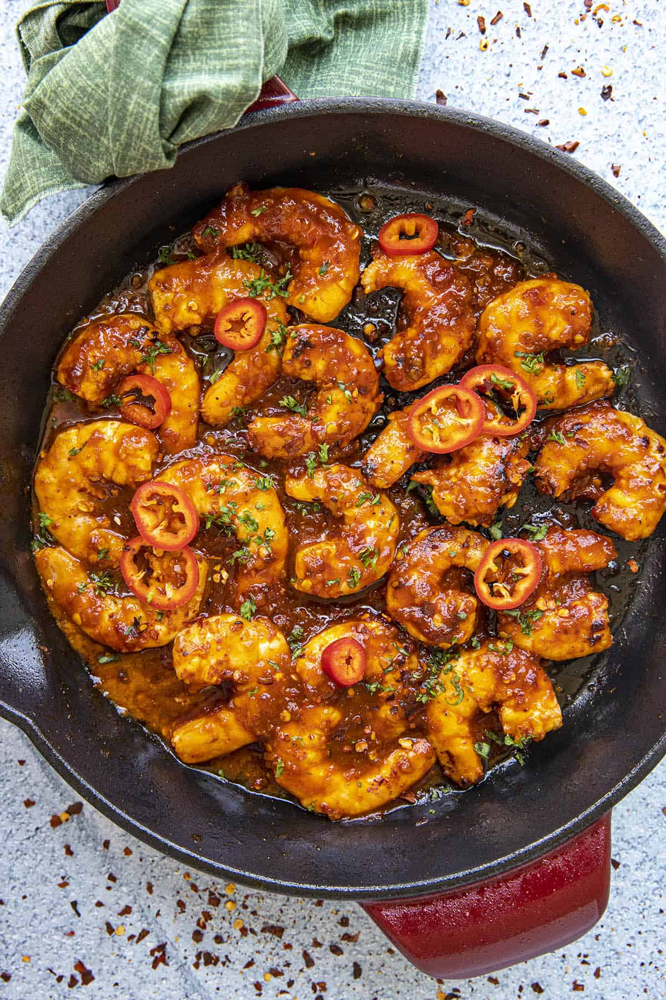

Home
Toilet Sriracha Shrimp
"I need all the memes, the memes to survive."

Ingredients
- Shrimp, ideally toilet shrimp
- Garlic
- Adobo seasoning
- Sriracha
- Unsalted butter
- Chilli flakes
- Jasmine rice
Instructions
Rice
- Wash jasmine rice
- Add washed jasmine rice and water to a pot
- Steam rice until cooked
Sriracha shrimp
- Grab the shrimp from the potty.
- Add oil and chopped garlic to a pan. Heat and saute
- Add shrimp and saute
- Add butter and baste shrimp. Saute
- Add adobo seasoning and chilli flakes. Saute
- Once shrimp is almost cooked, add sriracha to shrimp. Saute until caramelized
- Serve shrimp with rice